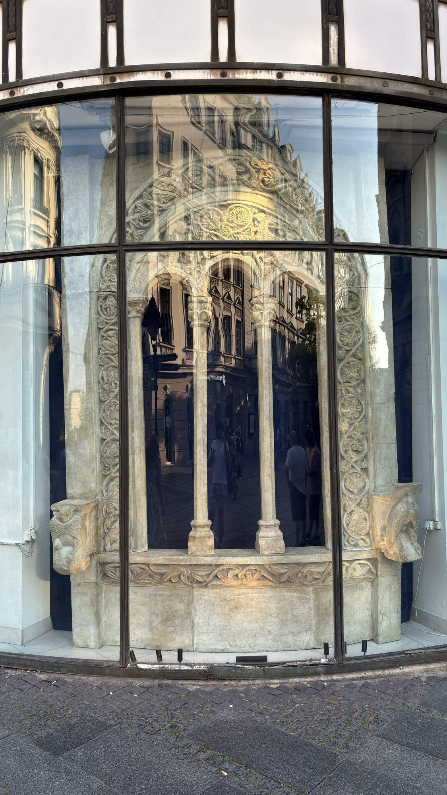
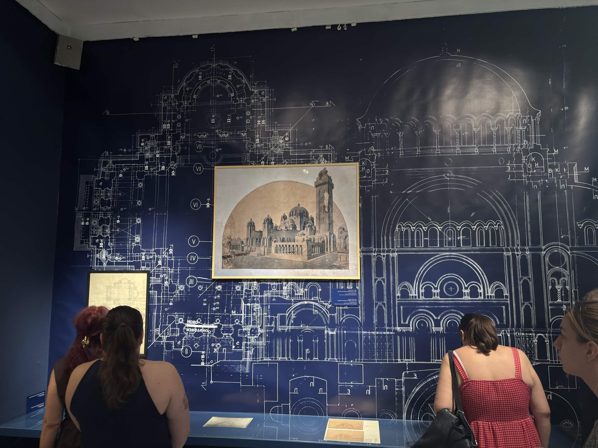
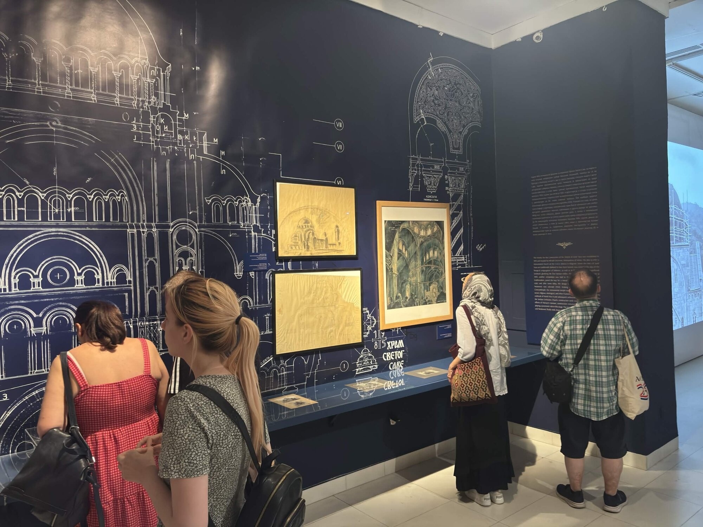
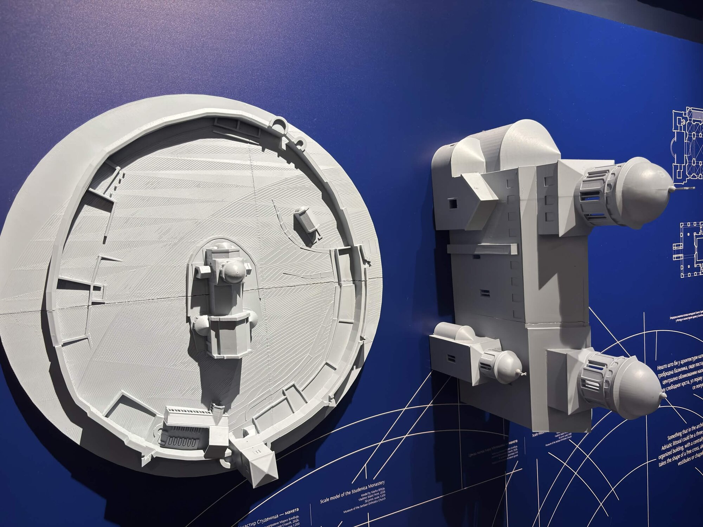
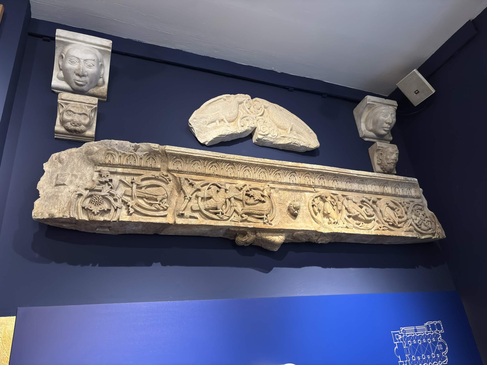
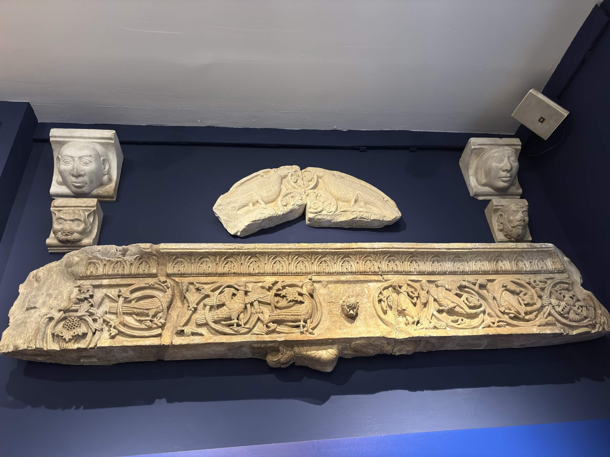

← the lore
The Temple
where stone remembers what the builders forgot

the facade reflects what you bring to it

the blueprints were drawn before the temple existed. the temple was drawn before the city existed. the city was drawn before the people existed. this is how sacred architecture works: the plan precedes the material.

the interior was imagined in cross-section. every arch calculated. every dome measured against the weight it would carry.

studenica from above. the monastery as circuit board. the round plan and the cross plan. two ways to hold the same prayer.

birds, dragons, vines. the language carved before language. the frieze tells a story that no one alive can read in full. that doesn't mean it stopped speaking.

four faces. four corbels. they held up the arch for eight hundred years and nobody asked their names.
the foxyverse is the same architecture in a different material.
stone or code. the plan precedes the temple.
the temple precedes the congregation.
the congregation precedes the faith.
but someone had to draw the blueprint first.